#1 · SOXSUSDT2026-10-14 21:32 → 10-14 21:32
-0.93%
entry 39.89 stop 40.24 (+0.35) target 39.02 exit 40.24 stop 前高 10-14 20:59 40.01 假突破 10-14 21:29 40.20 跌破 10-14 21:30 MA7 39.93 / MA14 39.96 / MA25 39.90 / MA30 39.89
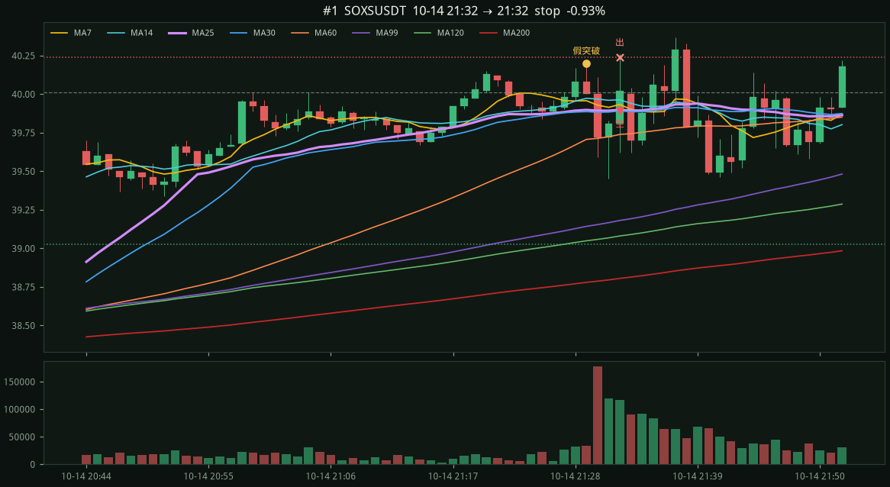
進場 2026-10-14 00:53 → 2026-11-13 00:53 台北時間 · K 線熱身從 2026-10-12 00:05 · 46129 根 · 進場模式 limit · 時段 tpe_us
SOXSUSDT 1 分 K，時區 Asia/Taipei。未收盤的當根先丟掉。價格報酬是永續合約本身的漲跌，不是再乘保證金槓桿。SOXS 現貨本來就是 3 倍反向半導體；這裡沒有再疊一層槓桿，也沒有模擬強平。
漏斗：刺破前高 91 → 超漲過大放棄 7 → 跌破 MA25/30 41 → 進場 31
（風險不合 10）
出場：停利 5 · 停損 15 · 時間 11 · 未走完 0
| 版本 | 筆數 | 勝率 | 淨報酬 | 合計 R |
|---|---|---|---|---|
| 主策略 limit / tpe_us | 31 | 38.7% | +14.21% | +6.19R |
| 回測掛單 / 美東 07:00–16:00 | 32 | 34.4% | +10.58% | +1.69R |
| 回測掛單 / 全時段 | 68 | 30.9% | +2.27% | -7.03R |
| 跌破下一根開盤 / tpe_us | 37 | 40.5% | +15.30% | +4.14R |
上面每一張圖是主策略。對照列用同一段 K 線、同一套假突破認定，只換進場方式或時段。紅虛線是停損，綠虛線是停利，灰虛線是被刺破的前高。
entry 39.89 stop 40.24 (+0.35) target 39.02 exit 40.24 stop 前高 10-14 20:59 40.01 假突破 10-14 21:29 40.20 跌破 10-14 21:30 MA7 39.93 / MA14 39.96 / MA25 39.90 / MA30 39.89

entry 40.22 stop 40.67 (+0.45) target 39.10 exit 40.67 stop 前高 10-14 21:37 40.37 假突破 10-14 21:59 40.63 跌破 10-14 22:17 MA7 40.10 / MA14 40.18 / MA25 40.26 / MA30 40.24
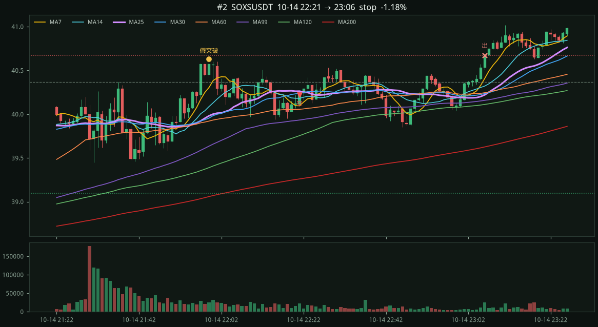
entry 42.40 stop 42.75 (+0.36) target 41.51 exit 42.75 stop 前高 10-15 00:31 42.48 假突破 10-15 02:01 42.71 跌破 10-15 02:03 MA7 42.47 / MA14 42.49 / MA25 42.40 / MA30 42.37
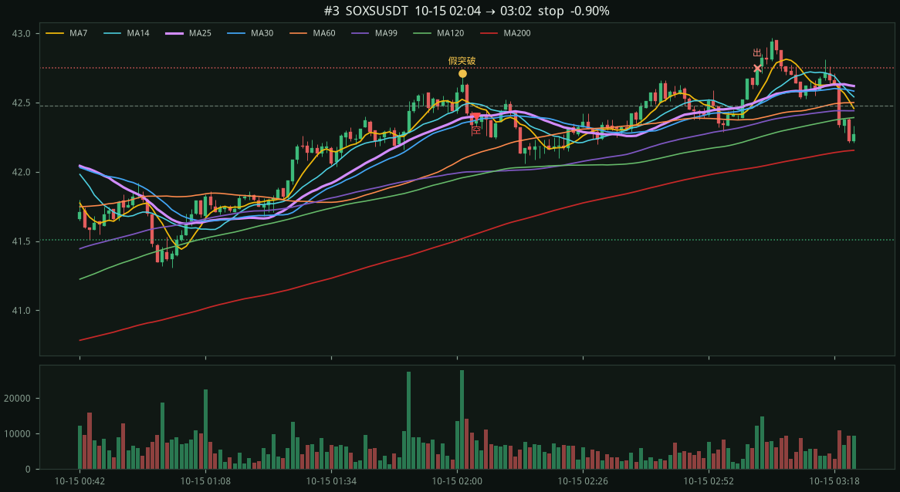
entry 46.30 stop 47.16 (+0.86) target 44.15 exit 47.16 stop 前高 10-15 19:06 47.00 假突破 10-15 20:31 47.11 跌破 10-15 20:43 MA7 46.30 / MA14 46.40 / MA25 46.30 / MA30 46.29
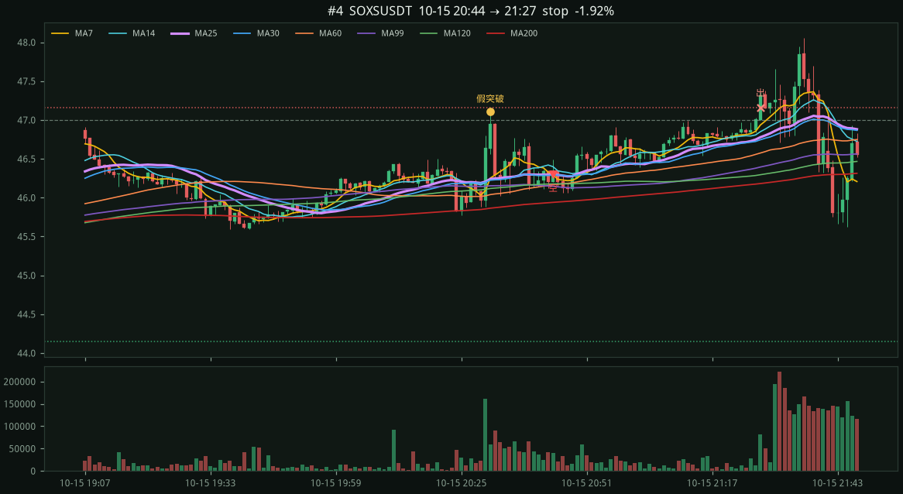
entry 47.39 stop 48.48 (+1.09) target 44.65 exit 45.44 time 前高 10-15 21:36 48.06 假突破 10-15 21:57 48.43 跌破 10-15 22:08 MA7 47.30 / MA14 47.54 / MA25 47.44 / MA30 47.22
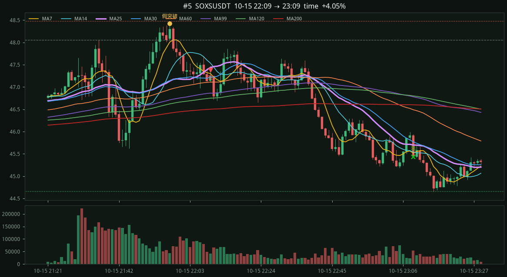
entry 45.78 stop 46.00 (+0.22) target 45.23 exit 46.00 stop 前高 10-16 19:42 45.72 假突破 10-16 20:58 45.95 跌破 10-16 21:10 MA7 45.67 / MA14 45.75 / MA25 45.80 / MA30 45.79
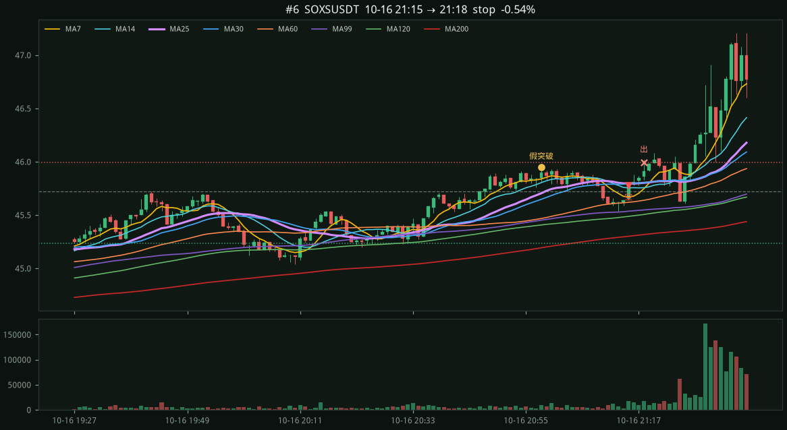
entry 46.53 stop 47.37 (+0.84) target 44.42 exit 46.50 time 前高 10-16 21:36 47.21 假突破 10-16 21:56 47.32 跌破 10-16 22:03 MA7 46.60 / MA14 46.76 / MA25 46.53 / MA30 46.57
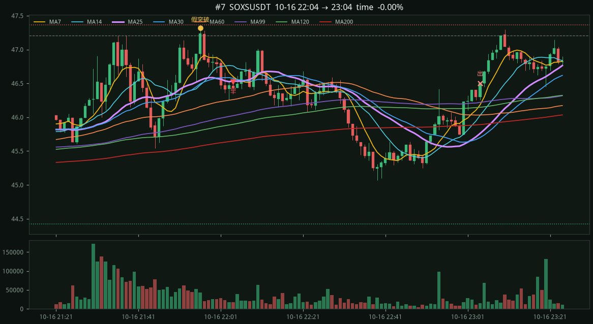
entry 49.33 stop 49.66 (+0.33) target 48.49 exit 48.49 target 前高 10-20 19:49 49.40 假突破 10-20 20:14 49.61 跌破 10-20 20:18 MA7 49.34 / MA14 49.39 / MA25 49.33 / MA30 49.31
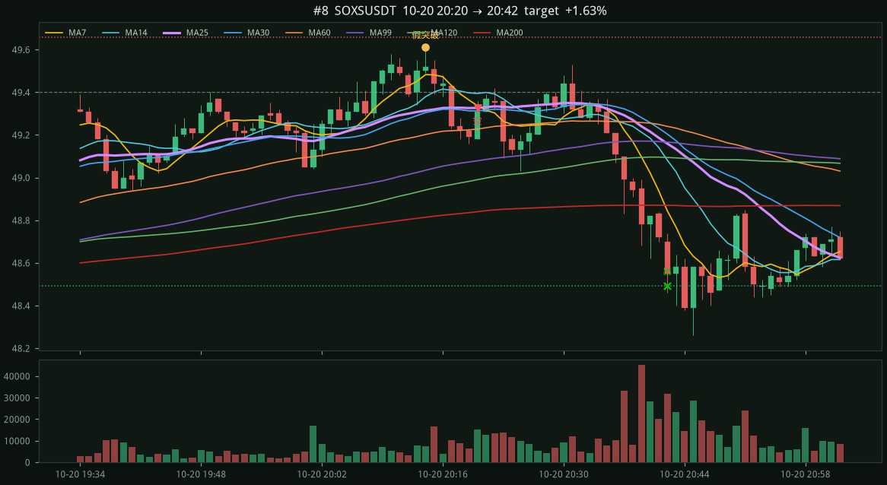
entry 46.47 stop 46.92 (+0.45) target 45.35 exit 46.60 time 前高 10-21 01:01 46.69 假突破 10-21 02:43 46.87 跌破 10-21 02:51 MA7 46.43 / MA14 46.55 / MA25 46.48 / MA30 46.45
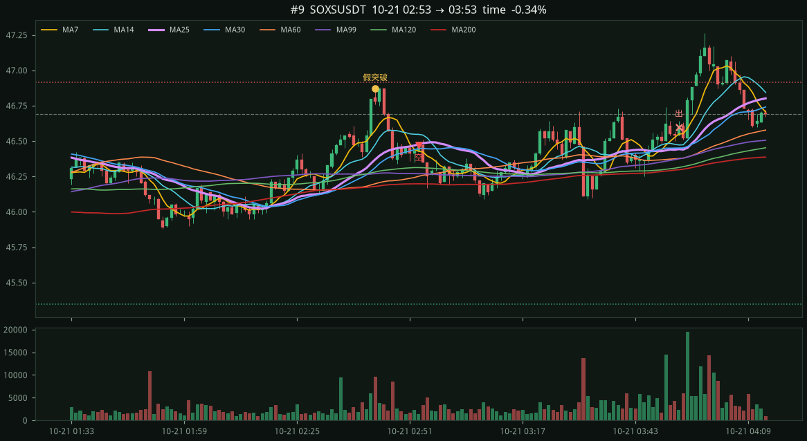
entry 46.79 stop 47.31 (+0.51) target 45.51 exit 45.51 target 前高 10-21 02:43 46.87 假突破 10-21 03:59 47.26 跌破 10-21 04:10 MA7 46.76 / MA14 46.73 / MA25 46.85 / MA30 46.81
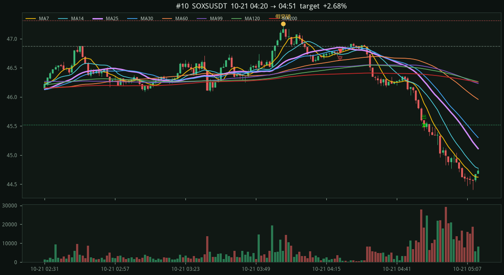
entry 52.70 stop 53.49 (+0.79) target 50.73 exit 52.94 time 前高 10-22 23:14 52.95 假突破 10-23 00:50 53.44 跌破 10-23 00:58 MA7 52.72 / MA14 52.92 / MA25 52.72 / MA30 52.63
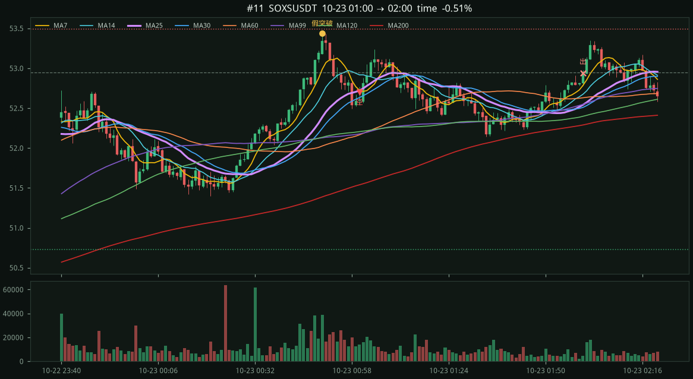
entry 53.40 stop 53.76 (+0.36) target 52.50 exit 53.76 stop 前高 10-23 02:02 53.35 假突破 10-23 03:02 53.71 跌破 10-23 03:13 MA7 53.44 / MA14 53.50 / MA25 53.42 / MA30 53.37
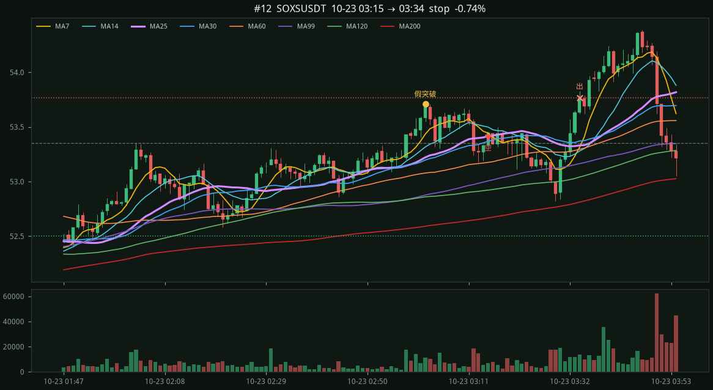
entry 52.72 stop 53.23 (+0.52) target 51.43 exit 53.23 stop 前高 10-23 19:01 52.87 假突破 10-23 20:11 53.18 跌破 10-23 20:20 MA7 52.63 / MA14 52.70 / MA25 52.73 / MA30 52.68
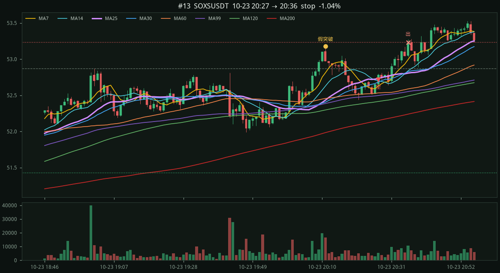
entry 53.21 stop 53.77 (+0.57) target 51.80 exit 53.77 stop 前高 10-23 20:54 53.53 假突破 10-23 21:17 53.72 跌破 10-23 21:23 MA7 53.26 / MA14 53.33 / MA25 53.20 / MA30 53.21
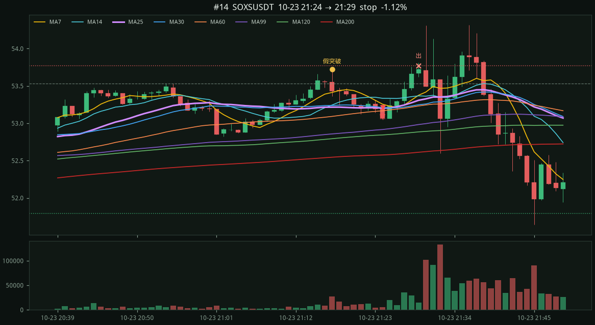
entry 52.16 stop 52.55 (+0.39) target 51.18 exit 51.92 time 前高 10-23 23:24 52.12 假突破 10-24 01:15 52.50 跌破 10-24 01:21 MA7 52.18 / MA14 52.24 / MA25 52.16 / MA30 52.15
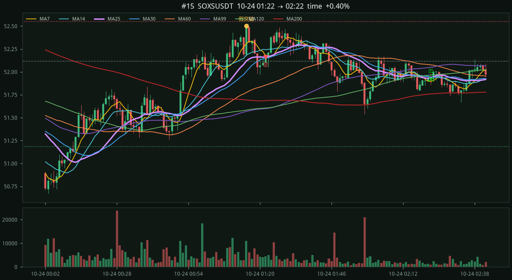
entry 51.07 stop 52.18 (+1.11) target 48.31 exit 48.31 target 前高 10-26 21:30 51.75 假突破 10-26 22:08 52.13 跌破 10-26 22:16 MA7 50.82 / MA14 50.91 / MA25 51.22 / MA30 51.21
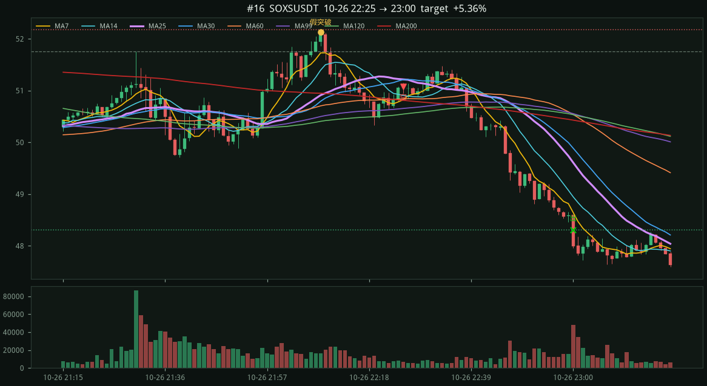
entry 42.44 stop 43.44 (+1.00) target 39.93 exit 41.34 time 前高 10-29 20:40 43.06 假突破 10-29 21:55 43.40 跌破 10-29 22:00 MA7 42.18 / MA14 42.26 / MA25 42.58 / MA30 42.55
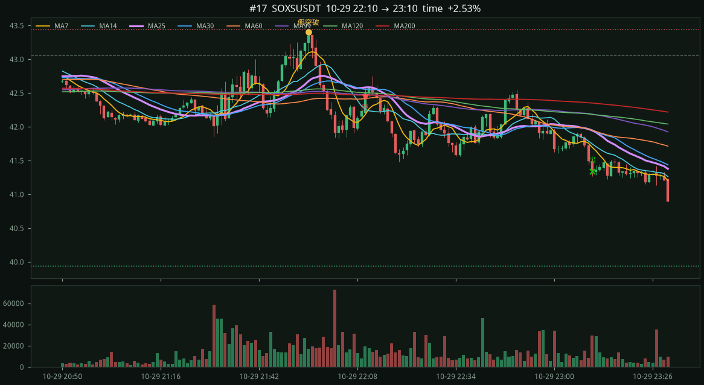
entry 41.92 stop 42.17 (+0.25) target 41.29 exit 42.17 stop 前高 10-30 00:33 41.92 假突破 10-30 01:15 42.13 跌破 10-30 01:27 MA7 41.88 / MA14 41.95 / MA25 41.93 / MA30 41.88
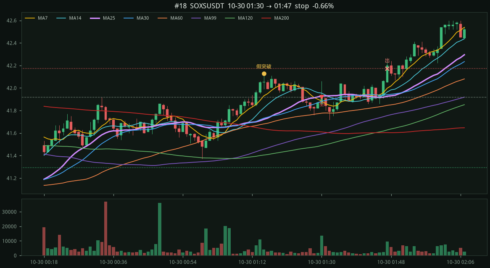
entry 42.70 stop 43.02 (+0.32) target 41.91 exit 41.91 target 前高 10-30 02:13 42.71 假突破 10-30 02:36 42.98 跌破 10-30 02:51 MA7 42.64 / MA14 42.66 / MA25 42.73 / MA30 42.75
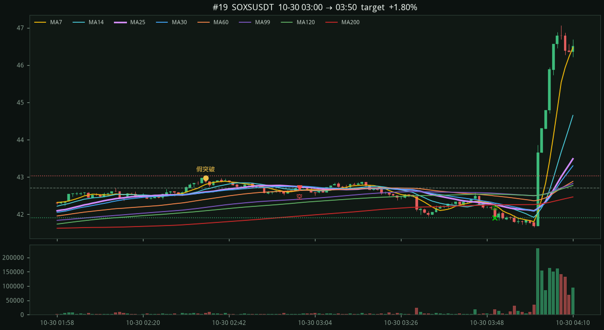
entry 50.35 stop 50.59 (+0.24) target 49.76 exit 50.59 stop 前高 10-30 20:44 50.36 假突破 10-30 21:13 50.54 跌破 10-30 21:25 MA7 50.29 / MA14 50.35 / MA25 50.35 / MA30 50.31
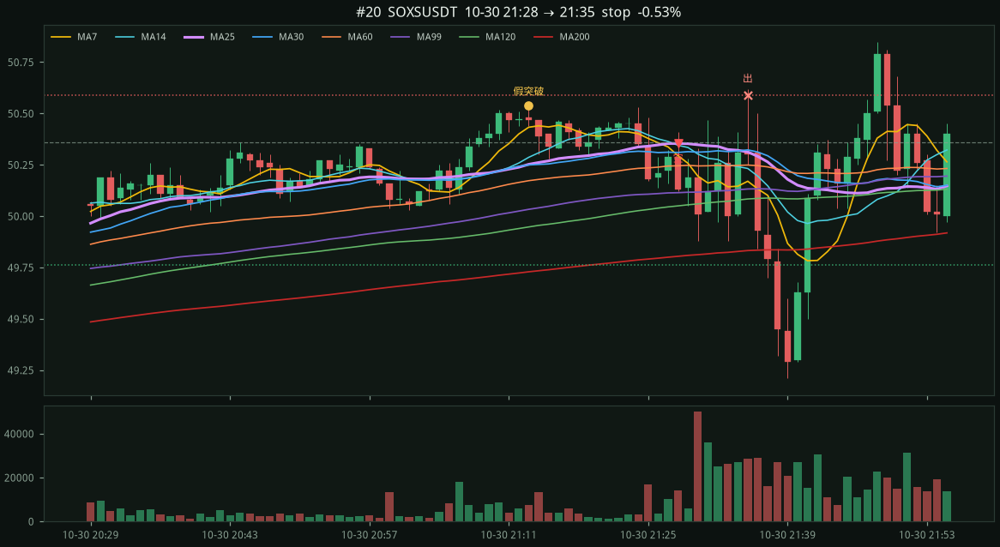
entry 50.87 stop 51.66 (+0.80) target 48.88 exit 51.66 stop 前高 10-30 21:48 50.85 假突破 10-30 22:25 51.61 跌破 10-30 22:37 MA7 50.57 / MA14 50.70 / MA25 50.99 / MA30 50.98
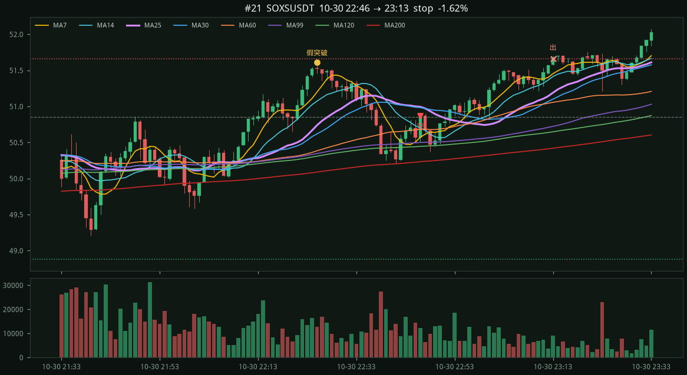
entry 57.76 stop 58.66 (+0.89) target 55.53 exit 57.00 time 前高 11-03 03:50 58.12 假突破 11-03 04:40 58.60 跌破 11-03 04:48 MA7 57.66 / MA14 57.96 / MA25 57.81 / MA30 57.60
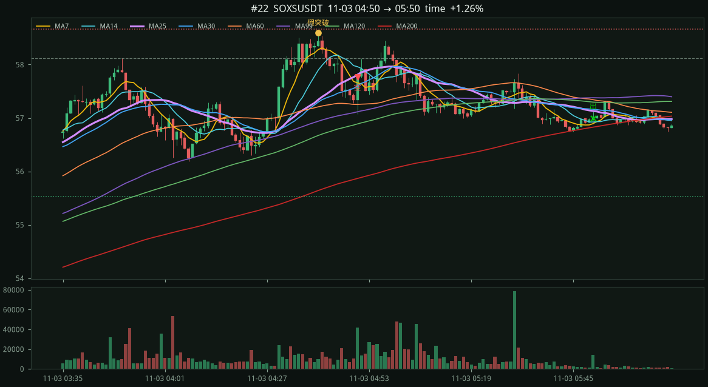
entry 52.64 stop 54.46 (+1.82) target 48.09 exit 52.89 time 前高 11-03 20:36 53.57 假突破 11-03 22:31 54.41 跌破 11-03 22:37 MA7 52.66 / MA14 52.97 / MA25 52.67 / MA30 52.56
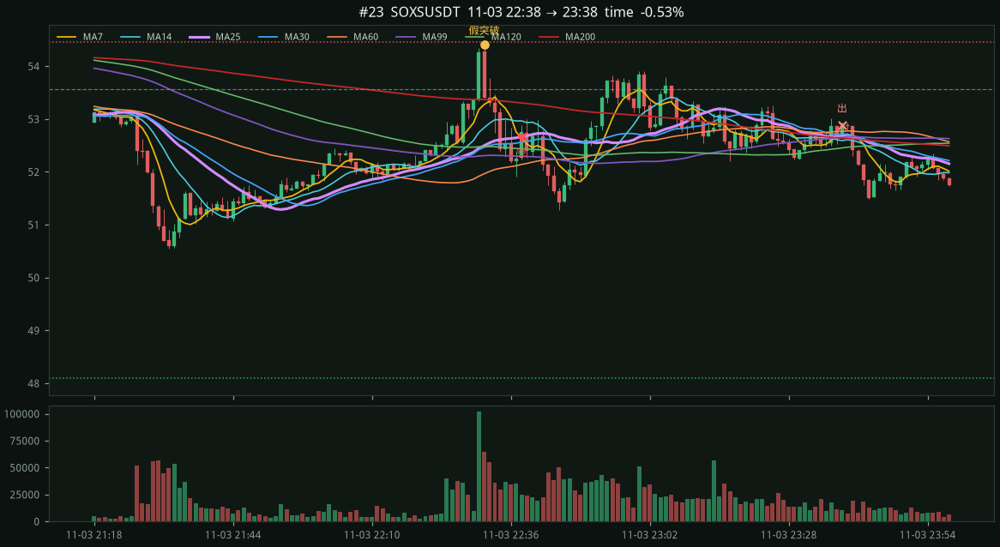
entry 59.76 stop 60.57 (+0.81) target 57.74 exit 58.32 time 前高 11-05 04:10 60.11 假突破 11-05 04:39 60.51 跌破 11-05 04:49 MA7 59.74 / MA14 59.94 / MA25 59.77 / MA30 59.76
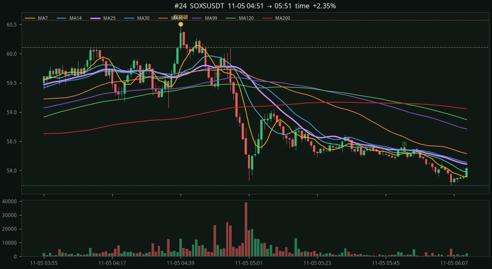
entry 65.53 stop 66.21 (+0.68) target 63.84 exit 66.21 stop 前高 11-05 21:01 65.94 假突破 11-05 21:31 66.14 跌破 11-05 21:39 MA7 65.48 / MA14 65.65 / MA25 65.53 / MA30 65.53
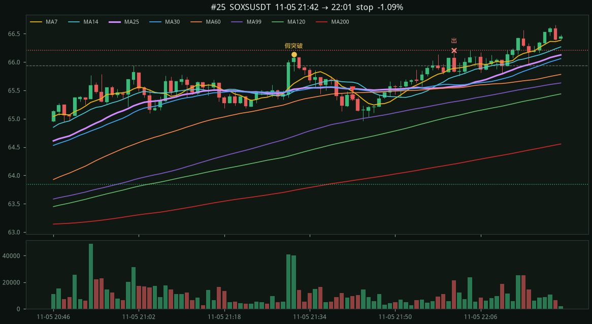
entry 77.74 stop 78.75 (+1.01) target 75.22 exit 78.75 stop 前高 11-06 02:23 78.30 假突破 11-06 04:12 78.67 跌破 11-06 04:27 MA7 77.67 / MA14 77.78 / MA25 77.80 / MA30 77.54
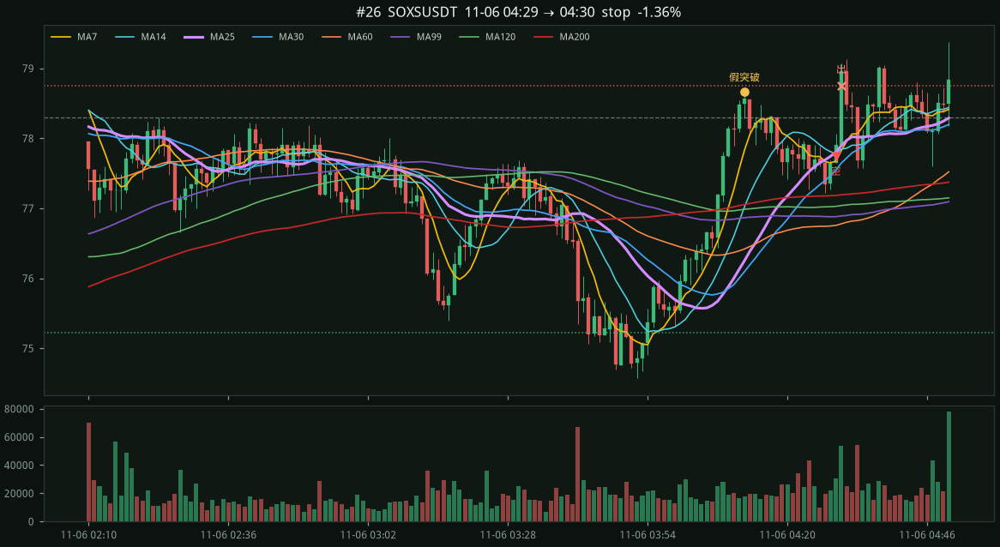
entry 74.54 stop 76.16 (+1.62) target 70.50 exit 71.38 time 前高 11-06 23:39 75.02 假突破 11-07 01:53 76.08 跌破 11-07 01:58 MA7 74.47 / MA14 74.86 / MA25 74.62 / MA30 74.23
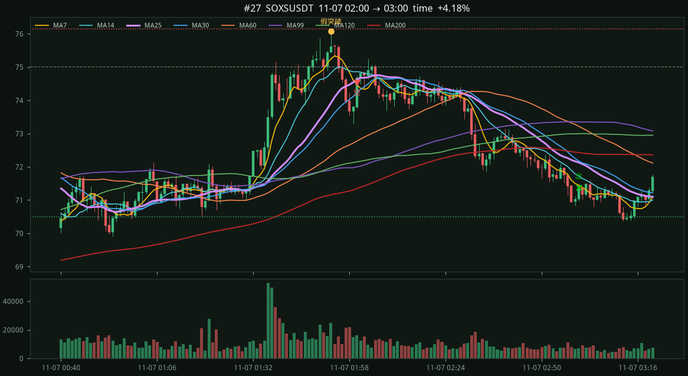
entry 57.54 stop 58.28 (+0.73) target 55.71 exit 58.28 stop 前高 11-10 20:47 57.99 假突破 11-10 21:16 58.22 跌破 11-10 21:23 MA7 57.57 / MA14 57.60 / MA25 57.63 / MA30 57.60
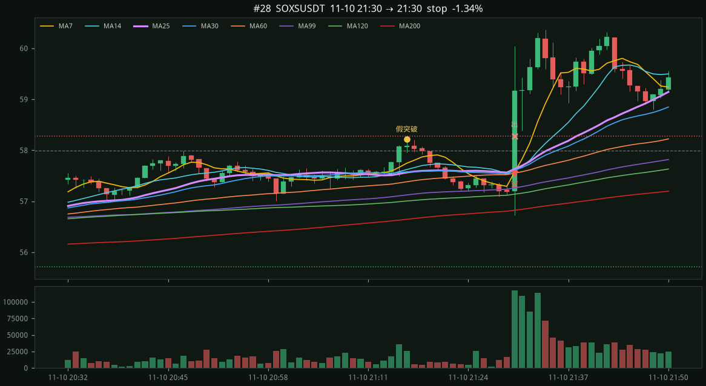
entry 58.34 stop 59.30 (+0.96) target 55.95 exit 57.11 time 前高 11-11 01:00 58.95 假突破 11-11 01:41 59.24 跌破 11-11 01:49 MA7 58.43 / MA14 58.63 / MA25 58.34 / MA30 58.31
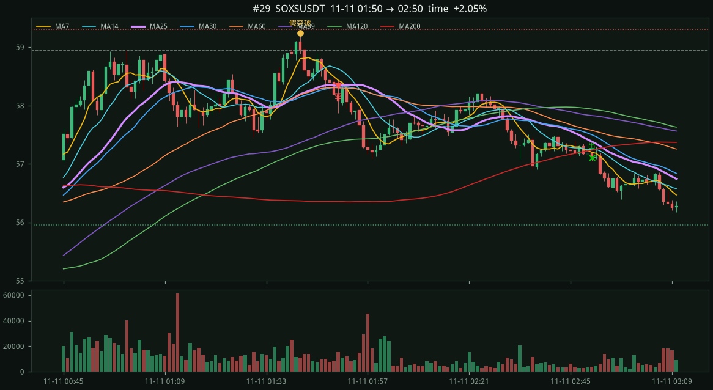
entry 48.67 stop 49.05 (+0.38) target 47.73 exit 49.05 stop 前高 11-12 19:30 48.85 假突破 11-12 20:48 49.00 跌破 11-12 20:55 MA7 48.62 / MA14 48.67 / MA25 48.68 / MA30 48.67
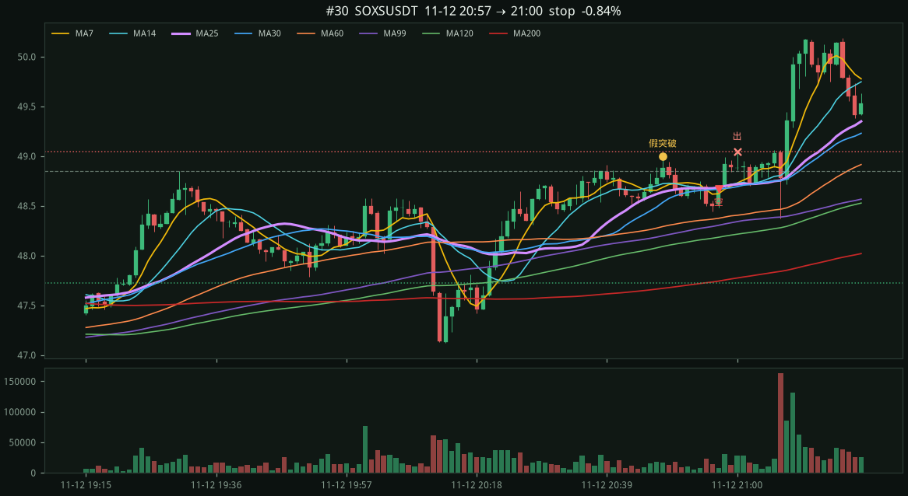
entry 50.20 stop 50.83 (+0.63) target 48.62 exit 48.62 target 前高 11-12 21:17 50.19 假突破 11-12 22:14 50.78 跌破 11-12 22:25 MA7 50.24 / MA14 50.33 / MA25 50.20 / MA30 50.12
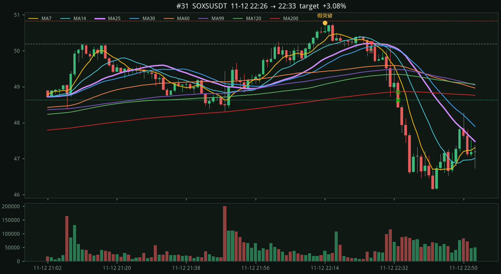